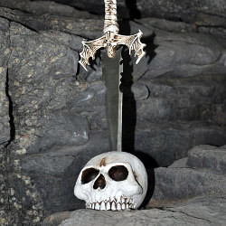

Ročník 2011
Indiana Jones a Tajemství křišťálové lebky & Pat a Mat, Varvažov 2011

Indiana Jones a Tajemství křišťálové lebky
Křišťálová lebka nás zavedla do pralesů Amazonie na březích dravé řeky Skalice hned vedle Varvažova. Tam jsme museli nejdříve zmapovat oblast, kterou jsme se ubírali k hrobce skrývající tu fascinující křišťálovou lebku. Tajemství její výroby dodnes nikdo neobjasnil, ale všichni víme, jak magickou má moc. Ten kdo ji jako první dokáže pozvednout ke slunci, získá neomezenou vládu nad svým životem i životy všech nás ostatních.
Stopovali jsme indiány a prali se s nástrahami přírody, museli jsme se stát na jeden den výrobci indiánských artefaktů, abychom se druhý den pokusili je prodat na tržišti a tak získat prostředky na další cestu. Když nám došly všechny zásoby, museli jsme ulovit rybu a připravit ji tak, abychom ji dokázali i sníst. Cestu nám zastiňovaly obrovské stromy i hádanky indiánských šamanů a šíleným tempem jsme spěchali pro indicie, vedoucí ke konečnému úspěchu. To, že nakonec neuspěli ani do té doby vedoucí Trifidi, do cíle nedospěli ani druzí Dobyvatelé a dokonce ani třetí místo nemohlo zaručit výhru Tajemným Johanům a tedy zvítězili naprostí outsideři – Lebky – jen zvýšilo naší bojovnost do dalších let. Střezte se hněvu válečníků!
Pat a Mat
Přišli za námi Pat a Mat! No vážně! Zpackali takových věcí, že by to bez nás nedali zase dohromady. Naštěstí ti naši Pati i Mati byli plní energie, a tak jsme společně prozkoumali tajemné kouty pirátských lodí, nebo se mrkli na Havaj a zatančili si tanec hula hula! Postavili jsme lesní město, vyrobili si luky, zahráli si golf, samozřejmě jsme se koupali, táborákovali, výletovali, diskotékovali a užívali si a hráli tolik her, že už jich snad ani víc neexistuje!